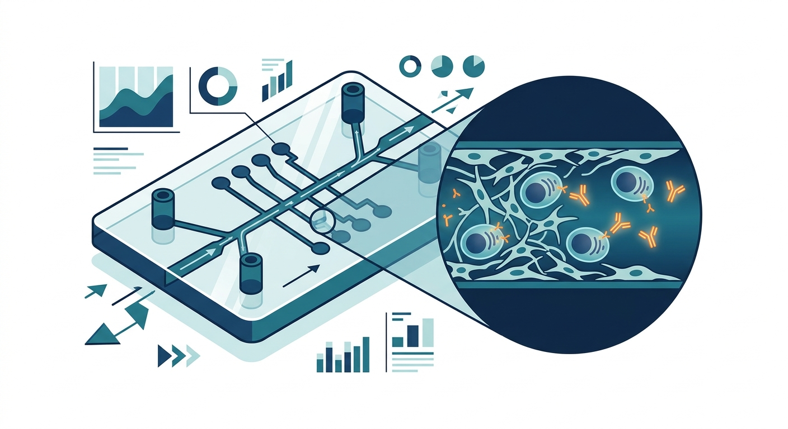

Mapping the Vault of Immune Memory: Bone-Marrow-on-a-Chip Reveals the Secret Sanctuaries of Lifelong Antibodies

Imagine your immune system as an elite intelligence agency. When a pathogen invades, it deploys a fleet of highly specialized field agents—antibody-secreting cells (ASCs), or plasma cells. But once the war is won, where do these agents go? They retire to the ultimate cellular safehouse: the bone marrow. Here, in dark, microscopic sanctuaries, some of these cells survive for decades, quietly pumping out protective antibodies that shield us from diseases we encountered in childhood. Yet, for scientists, this safehouse has long been a black box. Our understanding of how human plasma cells navigate, settle, and survive inside bone marrow has been severely limited, largely because we cannot easily peer inside living human bones, and mice models often fail to translate to human biology.
Now, a pioneering study published in Science Advances has cracked open the vault. Researchers have engineered a highly sophisticated, perfusable human bone marrow-on-a-chip (hBMOC). Think of it as a microscopic, living metropolis molded into a silicone chip, complete with functioning blood vessels and structural scaffolding that mimics both the soft inner tissue near blood vessels (the perivascular niche) and the hard surface near the bone (the endosteal niche). By introducing human immune organoid-derived ASCs into this microfluidic device, the team was able to watch, in real-time, the intimate choreography of human immunological memory.
The results were mesmerizing. Rather than passively floating around, the ASCs acted like highly active urbanites. Propelled by a biochemical compass known as the CXCR4-CXCL12 signaling pathway, the cells exhibited a dynamic "stop-and-go" migration pattern. They actively traveled through the engineered blood vessels and squeezed into the perivascular neighborhoods, clustering closely around survival-promoting stromal cells. Crucially, the researchers discovered that the endosteal niche—the bone-adjacent zone—exerted a powerful pull, dictating how these cells moved, where they anchored, and how long they survived. It is a cooperative dual-niche system: the bony architecture anchors them, while the vascular neighborhood feeds them the biochemical signals required to keep them alive.
For the longevity and biotechnology sectors, this is a watershed moment. As we age, our immune systems undergo "immunosenescence"—our bone marrow degrades, our cellular niches collapse, and our long-lived plasma cells die off, leaving us vulnerable to infections and rendering vaccines far less effective. By using the hBMOC platform, drug developers can now test therapeutics designed to rejuvenate these niches or engineer CAR-T therapies that know exactly how to home into and persist within these protective pockets. It also provides a high-fidelity testbed for developing ultra-long-lasting vaccines, allowing scientists to see whether a candidate formulation can successfully coax ASCs into their lifetime retirement homes.
However, as with any breakthrough in organ-on-a-chip technology, a heavy dose of realism is warranted. While the hBMOC is a massive leap forward from two-dimensional petri dishes and mouse models, it remains an elegant simplification of human physiology. A plastic chip, no matter how beautifully engineered, lacks the systemic feedback loops of a whole organism—there are no lymph nodes draining into it, no hormonal fluctuations from the endocrine system, and no mechanical stress of a walking, load-bearing human skeleton. Furthermore, scaling these microfluidic devices for high-throughput drug screening remains a daunting engineering and financial hurdle. Before this platform can routinely design the vaccines of tomorrow or cure plasma-cell cancers like multiple myeloma, researchers must prove that the cellular behaviors observed on this chip truly mirror the messy, complex reality of the human body.
Sources & Citations:
Primary Source: Ex vivo bone marrow subniches influence the fate of human antibody-secreting cells. (Science advances)
-
['
- Primary Paper: J. A. Shin, et al., "Ex vivo bone marrow subniches influence the fate of human antibody-secreting cells." Science Advances (2024). doi: 10.1126/sciadv.adz3976. ']